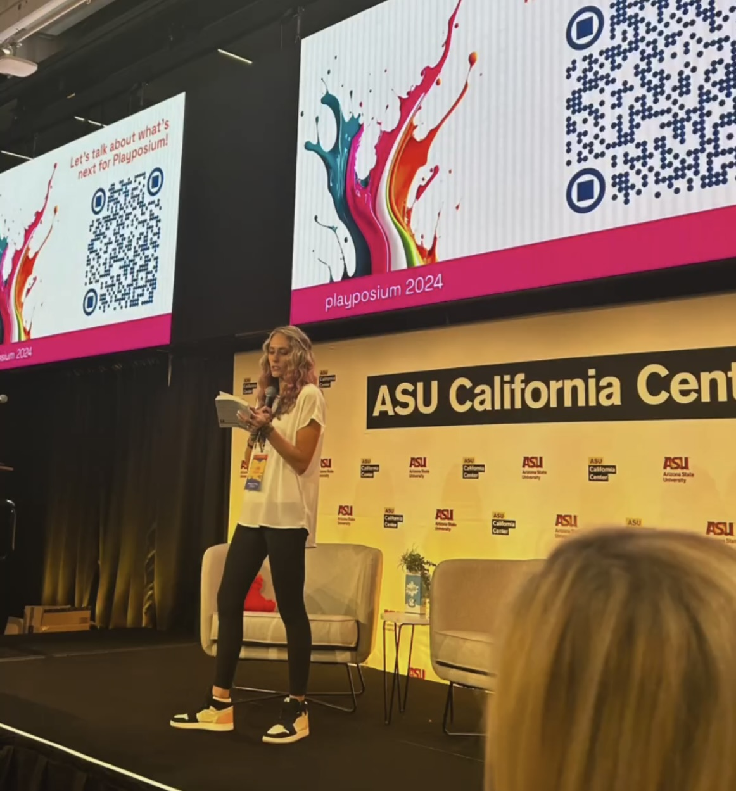

For colleges + organizations
Playful Pedagogy
Reimagining teaching, learning, and engagement through curiosity, risk-taking, connection, and emergent learning.
Explore this pathwayWhether we are trying to help people learn, grow, or heal, play changes the quality of the room. It opens space for curiosity, expression, connection, and movement.
Sometimes that looks like rehumanizing a classroom. Sometimes it looks like understanding a child’s story in the playroom. Different spaces, different purposes, same deep respect for what becomes possible when play is allowed back in.
I speak across two distinct areas. They share a belief in the power of play, but they are not the same work.
Reimagining teaching, learning, and engagement through curiosity, risk-taking, connection, and emergent learning.
Explore this pathwayDeepening clinical practice through child-centered play therapy and a narrative-informed lens for understanding what unfolds in the playroom.
Explore this pathway

I’m a faculty member at the University of Colorado Denver, a Licensed Professional Counselor (LPC), and a Registered Play Therapist Supervisor (RPT-S™). I co-founded Professors at Play, a global network of faculty exploring playful pedagogy in higher education.
My work lives at the intersection of teaching, therapy, and human development, bringing together research, lived experience, and embodied practice in ways that help people feel more alive in the spaces they inhabit.
Want to poke around a little? Here are a few books, articles, and projects that give a fuller feel for my work.
If you’re looking for a keynote, workshop, or clinical training that feels thoughtful, alive, and deeply human, let’s talk.